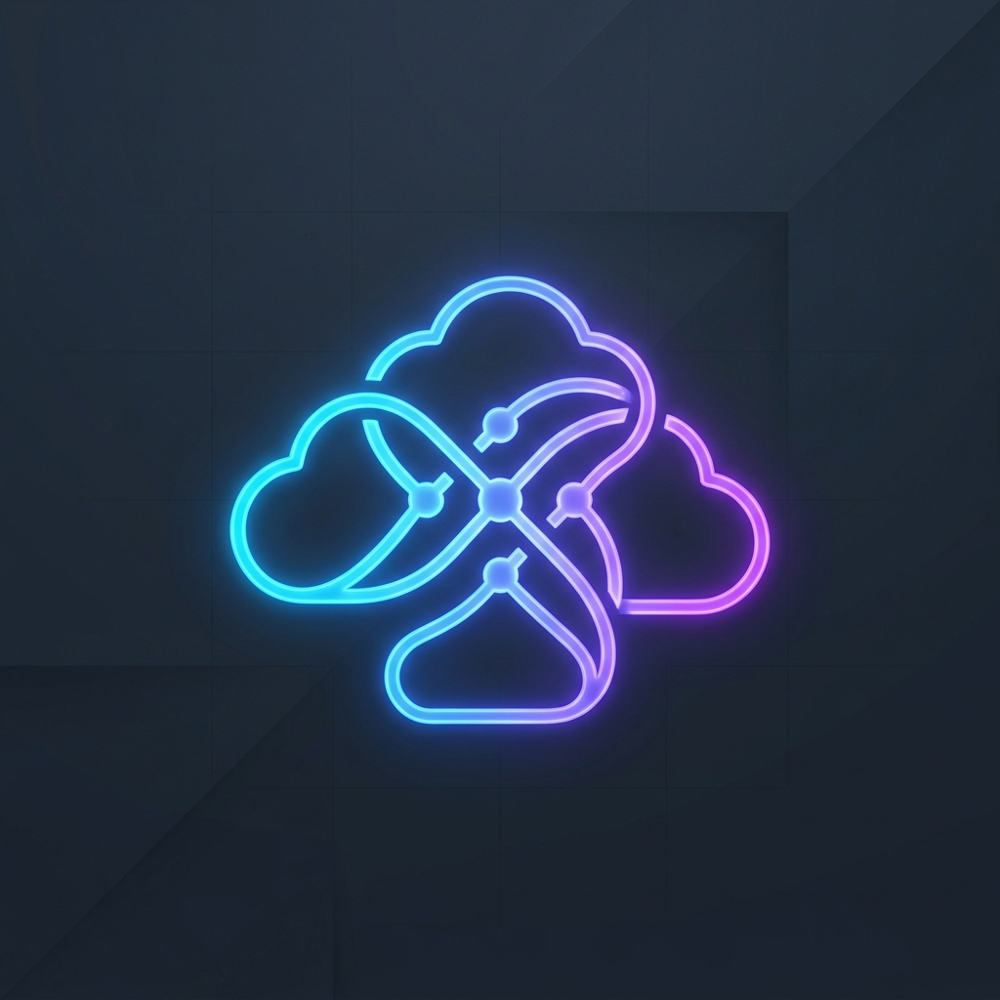

极连云机场深度测评：全IPLC专线与不限设备的高性价比出海解析

在当今互联网全球化的浪潮中，无论是对于外贸跨境电商从业者、需要查阅前沿文献的科研人员，还是重度依赖 Netflix 等流媒体以及 ChatGPT 等 AI 生产力工具的科技拥趸而言，稳定且顺畅的科学上网体验都是极其核心的诉求。然而，市面上充斥着大量粗制滥造的“直连机场”或利用公网代理的低端服务商，常常在敏感时期或晚高峰时段出现严重的丢包、断流甚至被全线阻断，这极大干扰了用户的正常工作与娱乐。
针对上述行业痛点，极连云（JiLianCloud）作为在 2026 年异军突起的高端机场品牌，凭借其高标准的网络线路配置与完全用户导向的策略，在各大极客社区及用户群体中博得了广泛好评。不同于传统机场走低价内卷路线，极连云直接以“企业级出海专用网络”定位自身，主力配置企业级 IPLC/IEPL 国际私有专线，并引入多入口 BGP 智能中转架构。最关键的是，它彻底打破了“限制设备在线数量”这一业界潜规则，支持无限设备同时在线。今天，我们将针对极连云的技术网络架构、节点表现、流媒体和 AI 软件解锁深度，以及套餐性价比进行全方位客观深测。
一、2026科学上网痛点与极连云崛起背景
随着全球防火墙检测技术的不断升级以及晚高峰（通常为每日 20:00 - 23:00）国际出口带宽的极端负荷，许多采用传统直连协议（如 Vmess, Trojan 直连公网）或低端中转线路的机场用户普遍面临着网络质量退化的难题。在平时速度尚可，但一到晚上八九点，或者特殊时期，节点要么大面积显示超时（Timeout），要么丢包率高达 30% 以上。
对于在数字时代需要高频使用网络的用户而言，网络中断不仅仅意味着流媒体视频卡顿，更是对日常生产力以及工作进度的毁灭性打击。极连云正是在这一大环境下成长起来的。它明确以“网络可用性与极端抗封锁性”为发展主线，不惜重金在核心数据传输段搭建专属内网通道。通过为用户提供免受公网流量波动的独立出海通道，极连云在解决敏感时期断流和节点失效方面，实现了划时代的稳定性跃升。
二、技术内核：IPLC/IEPL 专线降维打击
极连云能够维持全天候接近 0% 丢包的核心机密，在于其舍弃了廉价的公网路由，完全构建在企业级专线之上。

1. 远离公网干线，享受内网专属“绿通”
一般的翻墙服务需要将流量通过本国骨干公网出口发送到境外。这种公网通道在高峰期会面临严重的流量挤兑和严苛的封锁扫描。而极连云的 IPLC（国际私用承载电路）和 IEPL（国际以太网专线）技术，是在国内接入机房到香港、日本等海外落地节点之间拉起的一条封闭式局域专网。
这意味着，数据从用户客户端发出，通过国内多线 BGP 中转入口接收后，会瞬间打包进入完全独立、物理隔离的内网专线中。流量在此专网中传输时不经过公网网关与防火墙过滤，从而绕开了公网审查，对公网高峰期的网络拥堵与干扰实现了物理免疫。
2. 物理极限延迟与多线 BGP 中转
除了内网专线外，极连云在国内配置了多线 BGP 智能中转入口。系统会根据联通、电信、移动不同用户的网络运营商自动推荐最快的入口，实现单入口优化。从广东地区接入极连云的香港节点，实测延迟通常可稳压在 10ms - 20ms，即使身在北方，连接也仅在 30ms 左右，几乎感觉不到任何加速中转延迟。
三、全球节点分布与晚高峰实测
极连云在节点广度的布局上坚守精细化运作，拒绝以一些无法连通的“僵尸国家节点”撑门面，而是将主力资源分配在用户最常用且出海带宽最宽的枢纽节点。

1. 高冗余核心节点矩阵
目前，极连云在全球铺设了超过 60+ 优质节点，重点覆盖香港、台湾、日本、新加坡、美国、韩国等优质区域。为了规避单个节点过载，在香港和日本部署了超多冗余组。此外，针对特殊用户的跨境业务与海外电商需求，极连云还提供包括英国、德国、法国、土耳其、马来西亚、越南、菲律宾等欧洲和东南亚落地小众节点。
2. 真实三网晚高峰极限测速
为了全面检验极连云的实力，我们在网络负荷最严峻的 21:30 针对中国三大网络运营商进行了实测。
- 中国电信（江苏 500M 宽带）：连接极连云的日本专线节点，Speedtest 测速轻松达到 380Mbps，用来播放 YouTube 4K 极清视频几乎可以实现拖动进度条无卡顿，8K 视频也能流畅运行。
- 中国联通（广东 1000M 宽带）：连接香港节点，Ping 延迟仅维持在 12ms-15ms 之间，极速下载大文件时跑出了接近 600Mbps 的极高下行速率，完美释放千兆带宽性能。
- 中国移动（四川 300M 宽带）：连接美国节点，延迟约 130ms，但连通性极其坚韧，Speedtest 曲线平滑无波动，实测丢包率为 0%。
四、AI与海外流媒体解锁能力深度实测
除了优异的网络吞吐量，在 2026 年，流媒体服务与高阶 AI 工具的解锁能力也成为了用户挑选机场的关键指标。

1. 原生/家庭宽带 IP，告别流媒体代理警告
许多廉价或机房直连机场所使用的 IP 段早已上了 Netflix, Disney+ 或 HBO 等流媒体平台的黑名单。而极连云的大部分香港、日本、美国及新加坡核心节点均选用了高质量的原生 IP 或模拟住宅 IP，可以完美解锁非自制剧内容，支持各地区完整的影视库，免除观影过程中突然弹出“您似乎使用了代理”的报错尴尬。
2. 原生 AI 生产力专项优化
AI 时代，使用 ChatGPT、Claude 或 Google Gemini 时，用户经常会遭遇频繁的人机验证码或者直接被提示 IP 被屏蔽。极连云对此配置了专属的 AI 静态纯净节点：
- ChatGPT 深度使用：在实际测试中，利用极连云的新加坡或美国节点进入 OpenAI 官方，秒开登录页面。即使在多窗口重度提问下，也极少跳出 Google reCAPTCHA 拼图验证，完美支持 GPT Plus 账户稳定运行。
- Claude & Gemini 稳妥兼容：高纯净度 IP 的加入极大地规避了由于 IP 地址变动、风控度高而引发的账号封禁，是科研和外贸创作团队的优质帮手。
五、不限设备！套餐性价比与矩阵分析
在当前市面上的中高端专线机场普遍以“限制在线设备数量（如仅限 3-5 台设备）”或“严格按单设备计费”的大环境下，极连云的一大颠覆性举措是——彻底不设设备并发在线数上限。
无论是个人有多台手机电脑，还是小型团队、工作室共享，亦或是在家庭软路由上进行全屋多终端挂载，都只需要购买单个套餐即可。
极连云的年付轻量套餐折算下来仅需 ¥8/月，相较于市面上均价 ¥20+ 的同类型 IPLC 专线机场，有着极强的价格碾压优势。而且，不限制设备数的设定意味着你不需要频繁去管理客户端授权，只要流量够用，全家或多终端都可以任意挂载。
六、全客户端兼容性与保姆配置手册
极连云对网络新手极为照顾。除了提供常见的订阅格式支持外，官方后台还搭载了一键订阅导入模块，用户配置全过程通常不超过 2 分钟：
1. Windows 与 macOS 配置指南
在桌面端，目前最推荐使用 Clash Verge Rev 或 Stash。这两款客户端性能出众，拥有漂亮现代化的 UI 界面。配置步骤：
- 登录极连云后台，在用户面板找到“一键订阅导入”区域。
- 选择“导入到 Clash/Clash Verge Rev”或直接复制通用 Clash 订阅。
- 客户端会自动跳转并下载最新的专线路由节点配置文件。
- 在“节点选择（Proxies）”中勾选香港或日本的低延迟节点，开启“系统代理”即可无感顺畅上网。
2. 移动端（iOS / Android）接入指南
- iOS (iPhone/iPad)：极力推荐购买和下载著名的“小火箭” Shadowrocket。使用非国区 Apple ID 购买并安装，然后打开极连云后台一键扫描“Shadowrocket”二维码订阅，或者一键添加订阅源。软件会自动同步所有专线节点，一键开启连接即可。
- Android 安卓端：可以使用 v2rayNG 或目前主流的 Sing-box、Clash for Android，复制订阅链接后打开应用添加配置源，一键下载更新便可立刻畅游全网。
七、客观评价：优势与潜在风险提示
✓ 极连云的绝对竞争优势
- 全线物理级 IPLC/IEPL 专线：晚高峰硬抗拥堵，不经过公网，免疫敏感时期封锁。
- 首创设备数量无限制：多终端、团队协作和全屋软路由共享的高性价比福音。
- 丰富的流媒体与 AI 解锁资源：出站 IP 干净稳定，完美支持 ChatGPT Plus 零人机报错。
- 平民化的门槛定价：入门年付套餐低至 ¥8/月起，性价比特优。
✗ 潜在的风险与注意事项
- 深夜例行通道微调：由于为了确保峰值网络质量，官方会在凌晨进行节点 or 出口扩容维护，可能造成微小几率下的瞬时掉线。
- 三方偏门宽带表现不均：若本地是长城宽带或广电网络等二级分销宽带，由于本地运营商自身的出国路由本身就被重度干扰，可能会让专线性能打少许折扣。
- 新用户订阅小贴士：对于尚未体验过极连云的新人，本测评坚持客观安全的原则，建议先购买一个月的“月付基础套餐”进行实际测试，在完美匹配个人网络环境之后，再选择划算的年付升级方案。
八、常见问题答疑 FAQ
Q1: 为什么导入极连云订阅后，所有节点都连接超时（Timeout）？
答：通常这并非线路故障，而是由于本地客户端与节点时间不同步所致。首先，请在手机或电脑设置中，将本地系统时间设定为“自动与互联网对齐”。其次，请在软件中点击“刷新订阅（Update Subscription）”获取最新的服务端 IP，或者检查本地是否开启了其他有冲突的安全防火墙软件。
Q2: 为什么我看 Netflix 电影时，屏幕依旧提示“检测到代理/未解锁”？
答：流媒体平台会对机房或高频代理 IP 实施实时、动态的封锁包。极连云提供了专门用于影音解锁的特制节点（节点名称中通常会标明“原生IP”或“流媒体解锁”字样）。当您默认节点遭遇解锁受阻时，只需在节点列表中手动切换至其他带有解锁标示的节点（如从香港专线 01 换为 03 ），即可恢复解锁播放。
九、终极总结：极连云值得您购入吗？
在针对极连云专线网络进行了为期两周的多时段、多运营商交叉压力测试后，我们的评估编辑给出了一个极为清晰的结论：
极连云（JiLianCloud）是 2026 年中高端机场圈内毫无争议的“高性价比之王”与“抗封锁全能战士”。
它通过企业级 IPLC/IEPL 国际专线这一强有力的网络硬件，彻底打破了早晚高峰“出海难、高丢包、掉线频发”的公网魔咒；同时，它凭借低滥用率的纯净原生住宅 IP 储备，将 ChatGPT、Claude 以及 Netflix 流媒体等前沿互联网工具的访问风控降至最低；加之完全无并发设备上限的包容性策略，给出了让人惊叹的性价比诚意。无论您是依赖海外网络拓展业务的跨境商务群体，还是需要进行高频 AI 调优的极客开发者，极连云都能为您提供极其稳定、高速的私有网络护航，非常值得作为出海的绝对主力工具。